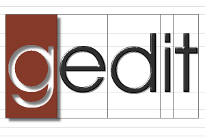

What is gedit?
gedit is the official text editor of the GNOME desktop environment.
While aiming at simplicity and ease of use, gedit is a powerful general purpose text editor.
Currently it features:
- Full support for internationalized text (UTF-8)
- Configurable syntax highlighting for various languages (C, C++, Java, HTML, XML, Python, Perl and many others)
- Undo/Redo
- Editing files from remote locations
- File reverting
- Print and print preview support
- Clipboard support (cut/copy/paste)
- Search and replace
- Go to specific line
- Auto indentation
- Text wrapping
- Line numbers
- Right margin
- Current line highlighting
- Bracket matching
- Backup files
- Configurable fonts and colors
- A complete online user manual
gedit features also a flexible plugin system which can be used to dynamically add new advanced features to gedit itself.
See the plugins page for more info on the existing plugins.
Go to the screenshots
page to see gedit in action!
gedit is released under the GNU General Public License (GPL).